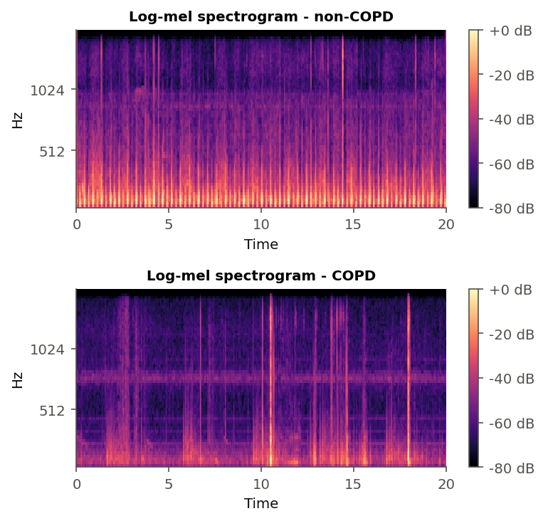
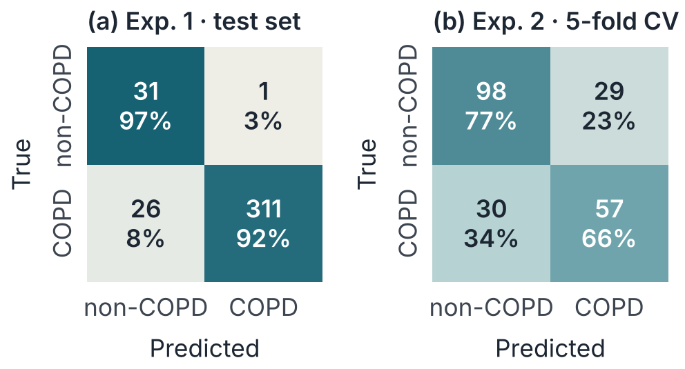
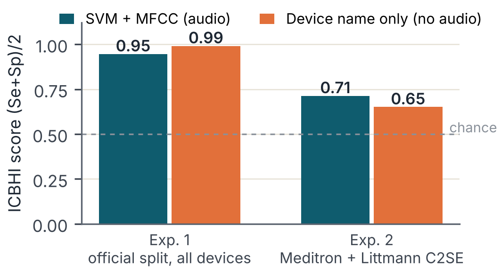
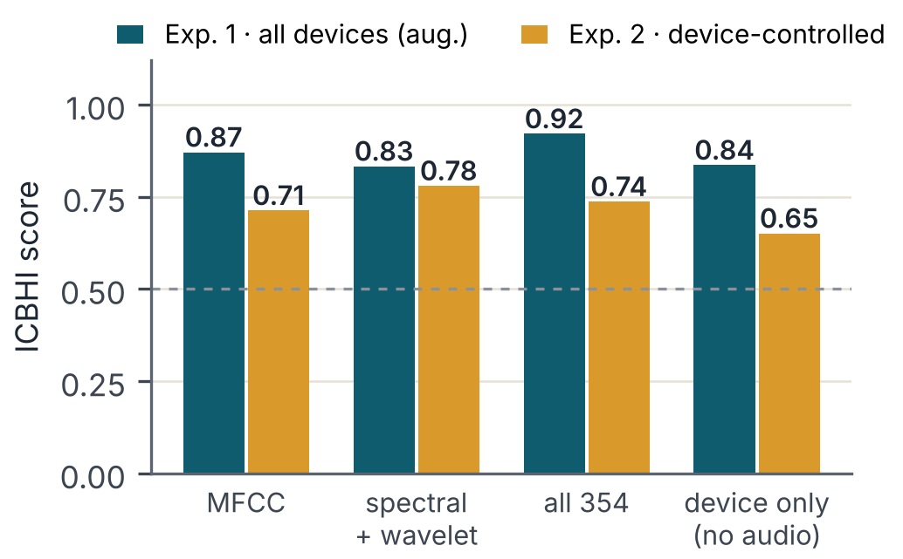

1Introduction
COPD is a long-term lung disease that makes breathing difficult. Doctors listen to the lungs with a stethoscope, but the result depends on their experience. Automatic analysis of lung sounds could be a cheap first check before tests such as spirometry.
We selected the paper by Srivastava et al. [1]. It classifies recordings of the ICBHI 2017 database [2] as COPD or non-COPD, compares five audio features from librosa and trains a CNN. MFCC is its best feature, with an ICBHI score of 0.93. The code is public [3]. While reading the paper and its code, we found some problems: two patients appear in both the training and the test set, the “augmented” samples reuse the features of the original recordings, and the test set is also used as validation data. We therefore built our own small experiment. Our contributions are:
- a simple, reproducible pipeline with a patient-disjoint split;
- a comparison of three classifiers and three feature types;
- a shortcut check that measures how much the recording device alone can predict;
- an extension with spectrogram and wavelet features, feature selection and the same CV for both experiments.
Our task predicts a disease label (the diagnosis of the patient). It does not detect sound events such as crackles or wheezes, which ICBHI also annotates.
2Dataset and Method
Data.ICBHI 2017 contains 920 recordings from 126 patients; we used the Kaggle copy [4]. Each recording gets the diagnosis of its patient. We map COPD to 1 and all other diagnoses (healthy, URTI, pneumonia, etc.) to 0. There are 793 COPD and 127 non-COPD recordings, so the data is very unbalanced. We used the official ICBHI train/test split [7], but we moved patients 156 and 218 to the training set because they appeared in both parts (Table 1).
| Partition | COPD | non-COPD | Total |
|---|---|---|---|
| Train | 456 (39) | 95 (40) | 551 (79) |
| Test | 337 (25) | 32 (22) | 369 (47) |
Preprocessing.The recordings come from four devices with sampling rates of 4, 10 and 44.1 kHz. We resampled all of them to 4 kHz, so every device has the same 0–2 kHz bandwidth. A 4th-order Butterworth band-pass filter (100–1800 Hz, zero-phase) removes heart sounds and low-frequency noise. Then we removed the DC offset, normalised the peak amplitude to 1, and cut or repeated each signal to exactly 20 s, as in [1].
Features.We computed a 64-band log-mel spectrogram (128 ms window, 32 ms hop) and 40 MFCCs, the same number as in [1]. Fig. 1 shows two examples. The paper gives the full MFCC image to a CNN. Instead, we take the mean and the standard deviation of each MFCC and of its delta over time, which gives a vector of 160 numbers. For comparison, we also tested log-mel (128 numbers) and chroma (24 numbers) vectors.

Classifiers.Instead of the CNN, we used an SVM with an RBF kernel (main model), a Random Forest and a small MLP from scikit-learn [6]; features come from librosa [5]. This keeps the system light and fast on a normal laptop. Each model is a pipeline that starts with a StandardScaler, so scaling is learned from training data only. We chose the hyper-parameters with 4-fold cross-validation inside the training set, grouped by patient. Like [1], we augmented only the non-COPD training recordings (loudness, time mask, time shift, speed; four copies each), but we computed new features from every augmented signal. The test set was used only once.
Shortcut check.Two devices (AKG C417L and Littmann 3200) recorded only COPD patients. Therefore we added (i) a device-only baseline that predicts COPD from the device name alone, and (ii) Experiment 2, which uses only the Meditron and Littmann Classic II SE recordings (214 recordings, 86 patients), where both classes exist. Experiment 2 uses 5-fold patient-grouped cross-validation. Experiment 1 is the main test on the official split.
3Results and Discussion
Table 2 shows the results of Experiment 1. The positive class is COPD and the decision threshold is 0.5.
| Model | Features | Acc | Prec | Sens | Spec | F1 | AUC |
|---|---|---|---|---|---|---|---|
| SVM | MFCC | 0.927 | 0.997 | 0.923 | 0.969 | 0.958 | 0.989 |
| Random Forest | MFCC | 0.919 | 0.994 | 0.917 | 0.938 | 0.954 | 0.967 |
| MLP | MFCC | 0.938 | 0.994 | 0.938 | 0.938 | 0.965 | 0.987 |
| SVM | log-mel | 0.873 | 0.990 | 0.869 | 0.906 | 0.926 | 0.969 |
| SVM | chroma | 0.629 | 0.963 | 0.617 | 0.750 | 0.752 | 0.777 |
| SVM, no aug. | MFCC | 0.978 | 0.991 | 0.985 | 0.906 | 0.988 | 0.988 |
| Device only | no audio | 0.984 | 1.000 | 0.982 | 1.000 | 0.991 | 0.991 |
Main results.MFCC was the best feature, as in [1], and chroma was much weaker. The three classifiers gave similar results. Without augmentation, the SVM found more COPD cases but fewer non-COPD cases (specificity 0.91 instead of 0.97). Fig. 2a shows the errors of the main SVM: it missed 26 COPD recordings and gave only one false alarm. Precision is close to 1.0 only because the test set has 337 COPD and just 32 non-COPD recordings; the macro-F1 of the SVM is lower (0.83).

Key findingA rule that never listens to the audio and only reads the device name beats every audio model on the official split (Table 2, Fig. 3).
The device shortcut.The per-device results show the same problem. The SVM classified only 2 of the 6 COPD recordings from the Meditron device correctly, but it was right for 92–98% of the COPD recordings from the AKG and Littmann 3200 devices. In Experiment 2, where the device cannot help, the SVM reached 72.4% accuracy, 0.66 sensitivity, 0.77 specificity and an AUC of 0.82 (Fig. 2b); the accuracy changed a lot between folds (standard deviation 0.11). This is still better than the device-only baseline (ICBHI score 0.71 vs 0.65), so the audio carries some real COPD information, but much less than Experiment 1 suggests.

Comparison with [1].Our Experiment 1 ICBHI score (0.95) looks close to the 0.93 of [1], but we do not claim a fair comparison: the model, the augmentation and the split are different. The device-only result also shows that this split cannot really measure COPD detection.
Limitations.(1) The minority class is small: the test set has only 32 non-COPD recordings from 22 patients, so one error changes specificity by about 3%. (2) The label is the diagnosis of the patient, not the content of the sound; a COPD recording may sound normal. (3) Other shortcuts may exist. For example, all non-COPD recordings are about 20 s long, while COPD recordings last from 7.9 to 86.2 s; our fixed 20 s length reduces this effect. (4) We did not test the CNN of [1].
4Extended Experiments
After the presentation we tested three ideas: new spectrogram and wavelet features, automatic feature selection, and the same evaluation method for both experiments. We use the SVM and the protocol of Section 2, and no setting is chosen on test data. Exp. 2 (device-controlled) is the main criterion.
New features.Spectral (24 values): mean and standard deviation of 12 frame-wise descriptors — spectral centroid, bandwidth, roll-off, flatness, flux, zero-crossing rate, RMS energy and contrast in five octave bands (62–2000 Hz). Wavelet (42 values): a 5-level discrete wavelet transform (db4, PyWavelets [8]) splits the 4 kHz signal into six sub-bands from 0–62 Hz up to 1–2 kHz. For each band we compute log energy, relative energy, mean absolute value, standard deviation, skewness, kurtosis and entropy. Combined sets are simple concatenations; all sets together give 354 values.
Feature selection.Starting from all 354 values, we tried the ANOVA F-test, mutual information, random-forest ranking, L1 logistic regression and, for comparison, PCA. The selector is a step inside the scikit-learn pipeline, so it is fitted only on the training part of each fold. The number of kept features (20–160) is chosen by the inner CV.
Same CV for both experiments.Exp. 1 now also uses 5-fold patient-grouped CV over all 920 recordings (augmentation only in the training folds), exactly like Exp. 2.
| Features | n | Acc | Sens | Spec | AUC | ICBHI |
|---|---|---|---|---|---|---|
| MFCC (Section 3) | 160 | 0.724 | 0.655 | 0.772 | 0.816 | 0.713 |
| Spectral | 24 | 0.776 | 0.736 | 0.803 | 0.844 | 0.769 |
| Wavelet | 42 | 0.696 | 0.483 | 0.843 | 0.721 | 0.663 |
| MFCC + spectral | 184 | 0.771 | 0.759 | 0.779 | 0.844 | 0.769 |
| Spectral + wavelet | 66 | 0.794 | 0.701 | 0.858 | 0.852 | 0.780 |
| All features | 354 | 0.752 | 0.655 | 0.819 | 0.842 | 0.737 |
| All + RF selection* | ≈160 | 0.771 | 0.713 | 0.811 | 0.838 | 0.762 |
| All + PCA* | ≈48 | 0.776 | 0.678 | 0.843 | 0.841 | 0.760 |
Effect of the new features.Spectral + wavelet features gave the best device-controlled result: ICBHI 0.78 instead of 0.71 with MFCC, and specificity 0.86 instead of 0.77 (Table 3). Wavelet features alone were weak (sensitivity 0.48), but they helped together with the spectral descriptors. Using all 354 values was worse (0.74): with only 214 recordings, more features do not mean better results. Table 4 shows where the gain comes from. Within the Meditron recordings both sets work well (about 0.83), but within the Littmann C2SE recordings MFCC is close to chance (0.56) and spectral + wavelet reaches 0.69. So the gain happens inside one device; it is not a device effect.
| Device | COPD / non-COPD | MFCC | Spectral + wavelet |
|---|---|---|---|
| Meditron | 36 / 91 | 0.840 | 0.831 |
| Littmann C2SE | 51 / 36 | 0.556 | 0.694 |
Effect of feature selection.Selection did not give a clear extra gain. The best tuned selector (random forest, 0.762) was almost equal to no selection (0.756), and keeping only 20–40 features lowered the score for most methods. The features chosen most often were standard deviations of mel bands and of ΔMFCC, that is, how much the sound changes during breathing. Wavelet values were rarely chosen alone, although they helped in combination.

Same CV and device checks.With the same CV (Fig. 4), the device-only rule reaches 0.84 in Exp. 1. Only MFCC (0.87) and all 354 features (0.92), both with augmentation, are above it, and the ranking of the feature sets changes between the two experiments. Features should therefore be chosen on device-controlled data. All feature sets can also predict the recording device well (balanced accuracy 0.83–0.85 for four devices, where chance is 0.25), so device information is present in every representation. In the wavelet band energies, only the 125–250 Hz band shows a difference in the same direction on both devices (more energy in COPD recordings).
Limits of the extension.The fold-to-fold standard deviation in Exp. 2 is about 0.10, so differences below about 0.05 are not reliable. We see the gain of the spectral + wavelet features as a trend, not as a proof.
5Conclusion
We built a small and reproducible COPD vs non-COPD classifier for lung sounds with filtering, MFCC features and an SVM. On the official split it looks excellent (92.7% accuracy), but a device-only rule is even better. When we remove the device effect, accuracy falls to about 72%. Our main lesson is that the recording setup can hide inside the results of medical sound data, so simple baselines and patient-level splits are necessary. Next steps are more balanced data from the same device and event-level labels such as crackles and wheezes. In the extension, spectral and wavelet descriptors raised the device-controlled ICBHI score from 0.71 to 0.78, mainly on the Littmann recordings, while automatic feature selection did not help clearly.
AI usageWe used an AI assistant (Claude, Anthropic) to analyse the paper and its code, to write most of the Python code and the README, and to draft this paper and its extension. We ran all experiments on the real data, checked every number against the program output, and we are responsible for the final text. Code: github.com/Beyzanurguc/CSE470_HW1_COPD
RReferences
- A. Srivastava, S. Jain, R. Miranda, S. Patil, S. Pandya, K. Kotecha, “Deep learning based respiratory sound analysis for detection of chronic obstructive pulmonary disease,” PeerJ Comput. Sci., vol. 7, e369, 2021, doi: 10.7717/peerj-cs.369.
- B. M. Rocha et al., “An open access database for the evaluation of respiratory sound classification algorithms,” Physiol. Meas., vol. 40, no. 3, 035001, 2019.
- A. Srivastava, “copd-research,” GitHub repository, github.com/ArpanSriv/copd-research.
- “Respiratory Sound Database,” Kaggle, kaggle.com/datasets/vbookshelf/respiratory-sound-database.
- B. McFee et al., “librosa: Audio and music signal analysis in Python,” in Proc. 14th Python in Science Conf., 2015, pp. 18–25.
- F. Pedregosa et al., “Scikit-learn: Machine learning in Python,” J. Mach. Learn. Res., vol. 12, pp. 2825–2830, 2011.
- ICBHI official split and device-name corrections, from github.com/raymin0223/patch-mix_contrastive_learning (data/icbhi_dataset).
- G. R. Lee, R. Gommers, F. Wasilewski, K. Wohlfahrt, A. O’Leary, “PyWavelets: A Python package for wavelet analysis,” J. Open Source Softw., vol. 4, no. 36, 1237, 2019.